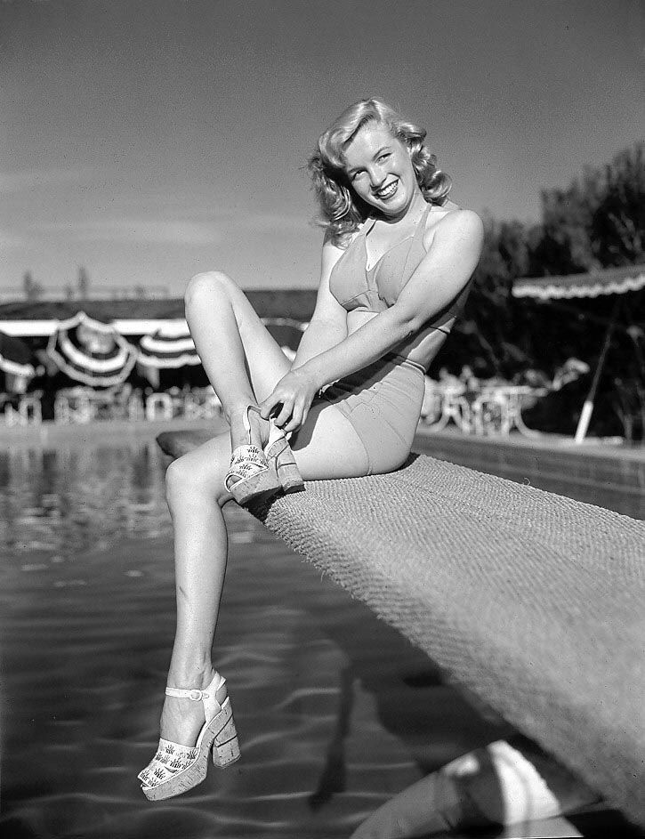
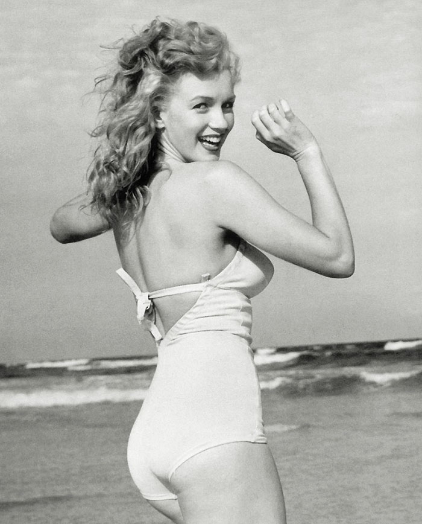

In April 1944, Dougherty was shipped out to the Pacific, and he would remain there for most of the next two years. Monroe moved in with his parents and began a job at the Radioplane Company, a munitions factory in Van Nuys. In late 1944, she met photographer David Conover, who had been sent by the U.S. Army Air Forces' First Motion Picture Unit to the factory to shoot morale-boosting pictures of female workers. Although none of her pictures were used, she quit working at the factory in January 1945 and began modeling for Conover and his friends. Defying her deployed husband, she moved on her own and signed a contract with the Blue Book Model Agency in August 1945.
As a model, Monroe occasionally used the name Jean Norman. She straightened her curly brunette hair and dyed it blonde to make herself more employable. Her figure was deemed more suitable for pin-up than fashion modeling, and she was featured mostly in advertisements and men's magazines. According to Emmeline Snively, the agency's owner, Monroe was one of its most ambitious and hard-working models; by early 1946, she had appeared on 33 magazine covers for publications such as Pageant, U.S. Camera, Laff, and Peek.
Through Snively, Monroe signed a contract with an acting agency in June 1946. After an unsuccessful interview at Paramount Pictures, she was given a screen-test by Ben Lyon, a 20th Century-Fox executive. Head executive Darryl F. Zanuck was unenthusiastic about it, but he gave her a standard six-month contract to avoid her being signed by rival studio RKO Pictures Monroe's contract began in August 1946, and she and Lyon selected the stage name "Marilyn Monroe". The first name was picked by Lyon, who was reminded of Broadway star Marilyn Miller; the last was Monroe's mother's maiden name. In September 1946, she divorced Dougherty, who was against her having a career.
Monroe had no film roles during the first six months and instead dedicated her days to acting, singing and dancing classes. Eager to learn more about the film industry, she also spent time at the studio lot to observe others working and to promote herself. Her contract was renewed in February 1947, and she was given her first film roles, bit parts in Dangerous Years (1947) and Scudda Hoo! Scudda Hay! (1948). The studio also enrolled her in the Actors' Laboratory Theatre, an acting school teaching the techniques of the Group Theatre; she later stated that it was "my first taste of what real acting in a real drama could be, and I was hooked". Despite her enthusiasm, her teachers thought her too shy and insecure to have a future in acting, and Fox did not renew Monroe's contract in August 1947. She returned to modeling while also doing occasional odd jobs at film studios, such as working as a dancing "pacer" behind the scenes at musical sets.
Monroe was determined to make it as an actress, and continued studying at the Actors' Lab. In October 1947, she appeared as a blonde vamp in the play Glamour Preferred at the Bliss-Hayden Theater, but it ended after only a few performances. To promote herself, she frequented producers' offices, befriended gossip columnist Sidney Skolsky, and entertained influential male guests at studio functions, a practice she had begun at Fox. She also became a friend and occasional sex partner of Fox executive Joseph M. Schenck, who persuaded his friend Harry Cohn, the head executive of Columbia Pictures, to sign her in March 1948.
While at Fox, Monroe was given "girl next door" roles; at Columbia, she was modeled after Rita Hayworth.[69] Her hairline was raised and her hair was bleached platinum blonde. She also began working with the studio's head drama coach, Natasha Lytess, who would remain her mentor until 1955. Her only film at the studio was the low-budget musical Ladies of the Chorus (1948), in which she had her first starring role as a chorus girl who is courted by a wealthy man. She also screen-tested for the lead role in Born Yesterday (1950), but her contract was not renewed in September 1948. Ladies of the Chorus was released the following month but was not a success.
Monroe then became the protégée of Johnny Hyde, the vice president of the William Morris Agency. Their relationship soon became sexual and he proposed marriage, but Monroe refused. He paid for Monroe to have plastic surgery on her jaw and possibly a rhinoplasty, and arranged a bit part in the Marx Brothers film Love Happy (1950), the New York promotional tour of which she also joined in 1949. Meanwhile, Monroe continued modeling, and in 1949 she posed nude for photos taken by Tom Kelley.